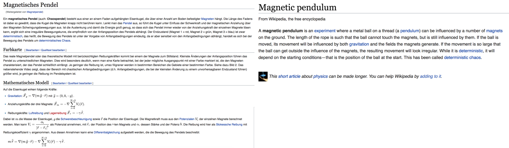
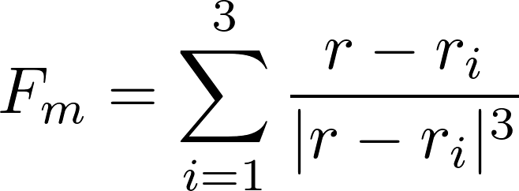
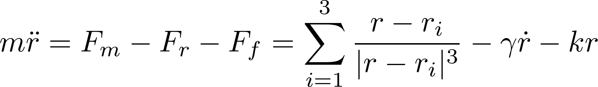
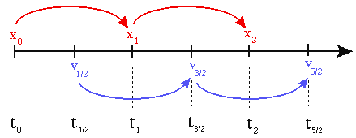
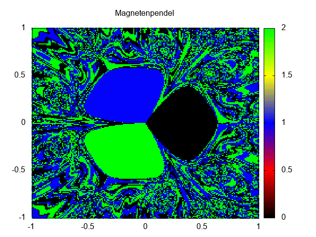

Magnetic Pendulum
14.06.2017
I spent a semester abroad this spring in Konstanz, Germany and while I was there I took a computational physics class (Computerphysik I) with Prof. Stephan Gerlach at Universität Konstanz. One of the course’s main topics was finding numeric solutions second order differential equations, using various numeric schemes. One lab was focused on modeling chaotic systems. In my classes here in the US, we’ve always focused on oscillators like the Duffing Oscillators, or sometime a double pendulum, but in Germany I was introduced to a system that I hadn’t seen before: the magnetic pendulum. Evidently, it’s a staple in German physics courses, but hasn’t made its way across the pond if the length of wikipedia pages are any indication:
The system is quite simple: a steel weight is suspended by a string over a set of (usually 3) magnets. The magnetic pendulum is highly chaotic, meaning that a small change in the weight’s starting position plays a large role in determining which magnet it will end over. The task put in front of the class was to model this system.
We assume that the mass moves only in the x-y plane. We have a magnetic force of the form:
and assume a damping and restoring force:
So we can write the equation of motion for the mass as a 2nd order differential equation, which we can solve numerically.
I elected to solve this numerically using the leapfrog method, which seperates the 2nd order DE to 2 first order ODEs, which can be solved with finite differences, in this case a position, x, and a velocity, v. The idea is that x is sampled at t = 0, Δt, 2Δt, ... nΔt, whereas v is sampled at t = 1/2Δt, 3/2Δt, ... n/2Δt, and they "play leapfrog" over each other.
Using 3 magnets centered around a 1m square, we can see the path that the magnet takes, based on the starting location of the magnet. For instance if we start at (1,1) we get the following output.

It is easy to see then that this starting location leads to the mass ending up over the 2nd magnet. If we iterate over all possible starting locations and calculate which magnet the mass will end on top of. So I wrote a script which takes the starting position and calculates which magnet it ends on and assign it a specific color. 
This isn't as high resolution as I would like, but gnuplot makes it difficult to generate really smooth images of this sort. As shown, the system is incredibly chaotic and depends heavily on starting location of the mass.